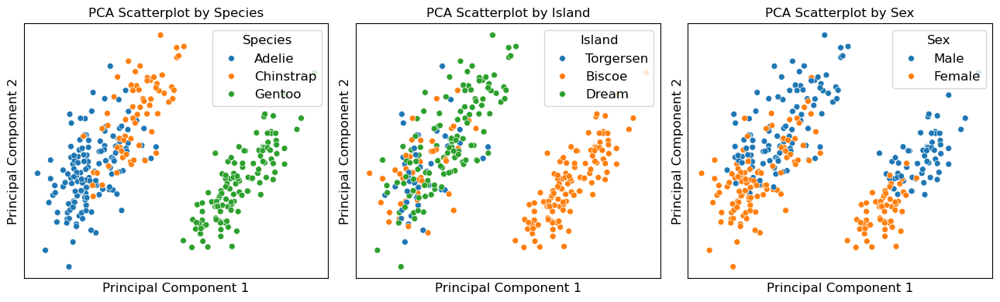
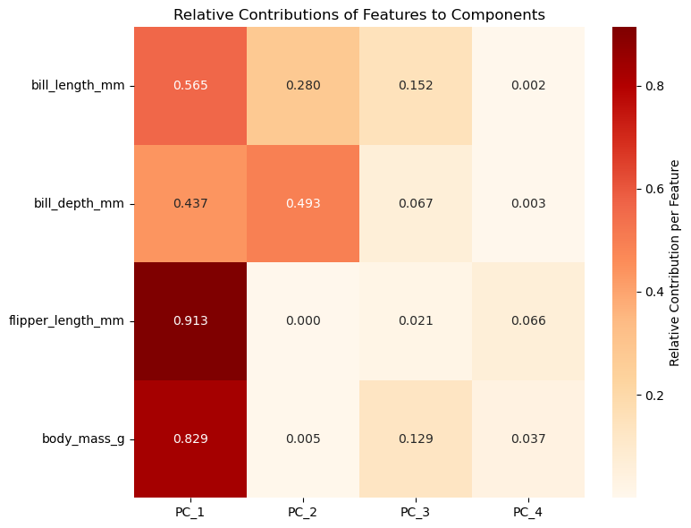
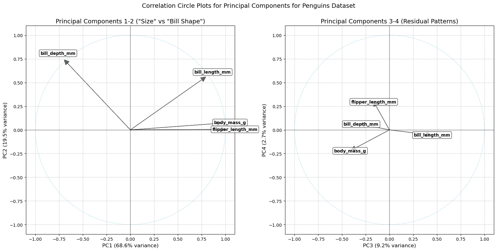
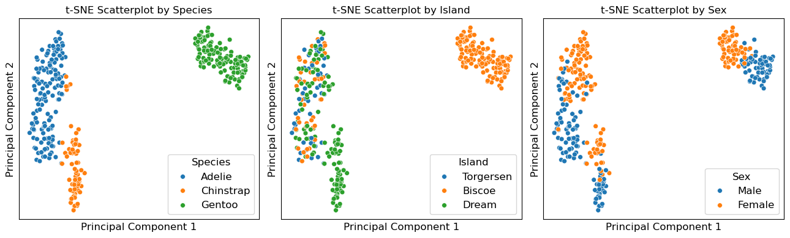
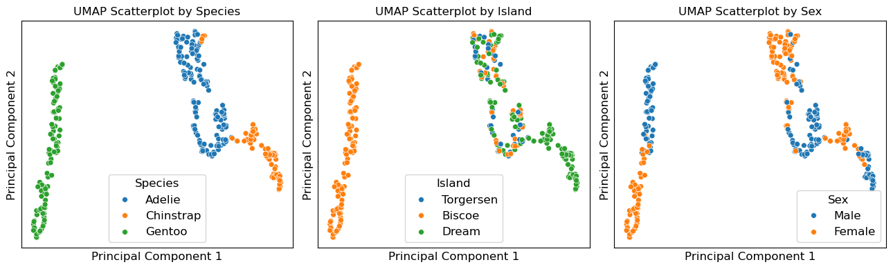
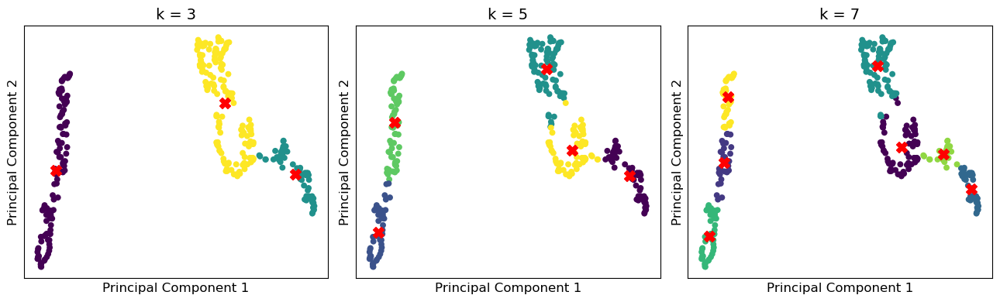

Unsupervised Learning (II): Dimensionality Reduction
import numpy as np
import matplotlib.pyplot as plt
import pandas as pd
import seaborn as sns
1. The Penguins Dataset
penguins = sns.load_dataset('penguins')
penguins
| species | island | bill_length_mm | bill_depth_mm | flipper_length_mm | body_mass_g | sex | |
|---|---|---|---|---|---|---|---|
| 0 | Adelie | Torgersen | 39.1 | 18.7 | 181.0 | 3750.0 | Male |
| 1 | Adelie | Torgersen | 39.5 | 17.4 | 186.0 | 3800.0 | Female |
| 2 | Adelie | Torgersen | 40.3 | 18.0 | 195.0 | 3250.0 | Female |
| 3 | Adelie | Torgersen | NaN | NaN | NaN | NaN | NaN |
| 4 | Adelie | Torgersen | 36.7 | 19.3 | 193.0 | 3450.0 | Female |
| ... | ... | ... | ... | ... | ... | ... | ... |
| 339 | Gentoo | Biscoe | NaN | NaN | NaN | NaN | NaN |
| 340 | Gentoo | Biscoe | 46.8 | 14.3 | 215.0 | 4850.0 | Female |
| 341 | Gentoo | Biscoe | 50.4 | 15.7 | 222.0 | 5750.0 | Male |
| 342 | Gentoo | Biscoe | 45.2 | 14.8 | 212.0 | 5200.0 | Female |
| 343 | Gentoo | Biscoe | 49.9 | 16.1 | 213.0 | 5400.0 | Male |
344 rows × 7 columns
sns.pairplot(penguins[["species", "bill_length_mm", "bill_depth_mm", "flipper_length_mm", "body_mass_g"]], hue="species", height=2.0)
<seaborn.axisgrid.PairGrid at 0x2d01b3f4ac0>

sns.pairplot(penguins, hue="island", height=2.0)
<seaborn.axisgrid.PairGrid at 0x2d021aa7910>
sns.pairplot(penguins, hue="sex", height=2.0)
<seaborn.axisgrid.PairGrid at 0x2d01e16bb80>
2. Data Processing
# remove missing values
penguins_dimR = penguins.dropna()
# check duplicate values from dataset
penguins_dimR.duplicated().value_counts()
False 333
Name: count, dtype: int64
3. Data Preprocessing
species = penguins_dimR["species"]
# select and standardize numerical features
from sklearn.preprocessing import StandardScaler
X = penguins_dimR[['bill_length_mm', 'bill_depth_mm', 'flipper_length_mm', 'body_mass_g']]
scaler = StandardScaler()
X_scaled = scaler.fit_transform(X)
4. Training Model & Evaluating Model Performance
4.1 Principal Component Analysis (PCA)
from sklearn.decomposition import PCA
# construct a PCA model with 2 PCs
pca_2 = PCA(n_components=2)
X_pca_2 = pca_2.fit_transform(X_scaled)
explained_var_2 = pca_2.explained_variance_ratio_
print(f'''The explained variance of PC1 is {explained_var_2[0]:.2%}
The explained variance of PC2 is {explained_var_2[1]:.2%}
The explained variance (PC1+PC2) is {explained_var_2.sum():.2%}''')
The explained variance of PC1 is 68.63%
The explained variance of PC2 is 19.45%
The explained variance (PC1+PC2) is 88.09%
X_pca_2_species = penguins_dimR.join(pd.DataFrame(X_pca_2,
index = penguins_dimR.index,
columns = ['PC_1', 'PC_2']))
X_pca_2_species
| species | island | bill_length_mm | bill_depth_mm | flipper_length_mm | body_mass_g | sex | PC_1 | PC_2 | |
|---|---|---|---|---|---|---|---|---|---|
| 0 | Adelie | Torgersen | 39.1 | 18.7 | 181.0 | 3750.0 | Male | -1.853593 | 0.032069 |
| 1 | Adelie | Torgersen | 39.5 | 17.4 | 186.0 | 3800.0 | Female | -1.316254 | -0.443527 |
| 2 | Adelie | Torgersen | 40.3 | 18.0 | 195.0 | 3250.0 | Female | -1.376605 | -0.161230 |
| 4 | Adelie | Torgersen | 36.7 | 19.3 | 193.0 | 3450.0 | Female | -1.885288 | -0.012351 |
| 5 | Adelie | Torgersen | 39.3 | 20.6 | 190.0 | 3650.0 | Male | -1.919981 | 0.817598 |
| ... | ... | ... | ... | ... | ... | ... | ... | ... | ... |
| 338 | Gentoo | Biscoe | 47.2 | 13.7 | 214.0 | 4925.0 | Female | 1.997716 | -0.976771 |
| 340 | Gentoo | Biscoe | 46.8 | 14.3 | 215.0 | 4850.0 | Female | 1.832651 | -0.784510 |
| 341 | Gentoo | Biscoe | 50.4 | 15.7 | 222.0 | 5750.0 | Male | 2.751505 | 0.266556 |
| 342 | Gentoo | Biscoe | 45.2 | 14.8 | 212.0 | 5200.0 | Female | 1.713854 | -0.725875 |
| 343 | Gentoo | Biscoe | 49.9 | 16.1 | 213.0 | 5400.0 | Male | 2.018537 | 0.336554 |
333 rows × 9 columns
fig, axes = plt.subplots(1, 3, figsize=(13,4))
# left subpolt: hua by species
sns.scatterplot(data=X_pca_2_species, x='PC_1', y='PC_2', hue='species', s=32, ax=axes[0])
axes[0].set_title("PCA Scatterplot by Species", fontsize=12)
axes[0].set_xlabel("Principal Component 1", fontsize=12)
axes[0].set_ylabel("Principal Component 2", fontsize=12)
axes[0].legend(title="Species", fontsize=12, title_fontsize=12)
axes[0].set_xticks([])
axes[0].set_yticks([])
# middle subplot: hue by island
sns.scatterplot(data=X_pca_2_species, x='PC_1', y='PC_2', hue='island', s=32, ax=axes[1])
axes[1].set_title("PCA Scatterplot by Island", fontsize=12)
axes[1].set_xlabel("Principal Component 1", fontsize=12)
axes[1].set_ylabel("Principal Component 2", fontsize=12)
axes[1].legend(title="Island", fontsize=12, title_fontsize=12)
axes[1].set_xticks([])
axes[1].set_yticks([])
# right subplot: hue by sex
sns.scatterplot(data=X_pca_2_species, x='PC_1', y='PC_2', hue='sex', s=32, ax=axes[2])
axes[2].set_title("PCA Scatterplot by Sex", fontsize=12)
axes[2].set_xlabel("Principal Component 1", fontsize=12)
axes[2].set_ylabel("Principal Component 2", fontsize=12)
axes[2].legend(title="Sex", fontsize=12, title_fontsize=12)
axes[2].set_xticks([])
axes[2].set_yticks([])
plt.tight_layout()
plt.show()
# plt.savefig("./8-pca2-penguins-distributions-species-sex-island.png")

How many PCs do we need?
# how many PCs do we need?
X_scaled_temp = pd.DataFrame(X_scaled, columns=X.columns, index=X.index)
# build a new PCA model with 4 PCs
pca_4 = PCA(n_components=4)
X_pca_4 = pca_4.fit_transform(X_scaled_temp)
explained_var_4 = pca_4.explained_variance_ratio_
print(f'''The explained variance of PC1 is {explained_var_4[0]:.2%}
The explained variance of PC2 is {explained_var_4[1]:.2%}
The explained variance of PC3 is {explained_var_4[2]:.2%}
The explained variance of PC4 is {explained_var_4[3]:.2%}
The explained variance of ALL is {explained_var_4.sum():.2%}''')
The explained variance of PC1 is 68.63%
The explained variance of PC2 is 19.45%
The explained variance of PC3 is 9.22%
The explained variance of PC4 is 2.70%
The explained variance of ALL is 100.00%
accumulated_var_4 = np.cumsum(explained_var_4 * 100)
explained_var_data = {'Explained Variance': explained_var_4, 'Explained Variability': explained_var_4*100.0, 'Cumulative Variability': accumulated_var_4}
explained_var_table = pd.DataFrame(explained_var_data, index=['Component {}'.format(i) for i in range(1, pca_4.n_components_+1)])
print(explained_var_table)
Explained Variance Explained Variability Cumulative Variability
Component 1 0.686339 68.633893 68.633893
Component 2 0.194529 19.452929 88.086822
Component 3 0.092161 9.216063 97.302885
Component 4 0.026971 2.697115 100.000000
# create DataFrame for PCA results
pca_columns = [f'PC_{i+1}' for i in range(X_pca_4.shape[1])]
X_pca_temp = pd.DataFrame(X_pca_4, columns=pca_columns, index=X.index)
# concatenate with original DataFrame
penguins_z_cp = pd.concat([X, X_pca_temp], axis=1)
penguins_z_cp
| bill_length_mm | bill_depth_mm | flipper_length_mm | body_mass_g | PC_1 | PC_2 | PC_3 | PC_4 | |
|---|---|---|---|---|---|---|---|---|
| 0 | 39.1 | 18.7 | 181.0 | 3750.0 | -1.853593 | 0.032069 | -0.234902 | -0.528397 |
| 1 | 39.5 | 17.4 | 186.0 | 3800.0 | -1.316254 | -0.443527 | -0.027470 | -0.401727 |
| 2 | 40.3 | 18.0 | 195.0 | 3250.0 | -1.376605 | -0.161230 | 0.189689 | 0.528662 |
| 4 | 36.7 | 19.3 | 193.0 | 3450.0 | -1.885288 | -0.012351 | -0.628873 | 0.472893 |
| 5 | 39.3 | 20.6 | 190.0 | 3650.0 | -1.919981 | 0.817598 | -0.701051 | 0.196416 |
| ... | ... | ... | ... | ... | ... | ... | ... | ... |
| 338 | 47.2 | 13.7 | 214.0 | 4925.0 | 1.997716 | -0.976771 | 0.379425 | -0.160892 |
| 340 | 46.8 | 14.3 | 215.0 | 4850.0 | 1.832651 | -0.784510 | 0.240758 | 0.008955 |
| 341 | 50.4 | 15.7 | 222.0 | 5750.0 | 2.751505 | 0.266556 | -0.419306 | -0.236256 |
| 342 | 45.2 | 14.8 | 212.0 | 5200.0 | 1.713854 | -0.725875 | -0.262764 | -0.330004 |
| 343 | 49.9 | 16.1 | 213.0 | 5400.0 | 2.018537 | 0.336554 | -0.155331 | -0.438802 |
333 rows × 8 columns
cp_variables = penguins_z_cp.columns
n_variables = pca_4.n_features_in_
# calculate the covariance matrix between veriables and Components
cov_var_comp = penguins_z_cp.cov()
cov_var_comp = cov_var_comp.iloc[:pca_4.n_features_in_, pca_4.n_features_in_:]
# calculate the correlation matrix between variables and Components
corr_var_comp = penguins_z_cp.corr()
corr_var_comp = corr_var_comp.iloc[:pca_4.n_features_in_, pca_4.n_features_in_:]
corr_var_comp
| PC_1 | PC_2 | PC_3 | PC_4 | |
|---|---|---|---|---|
| bill_length_mm | 0.751829 | 0.529438 | 0.390097 | -0.047682 |
| bill_depth_mm | -0.661186 | 0.702309 | -0.258529 | 0.052522 |
| flipper_length_mm | 0.955748 | 0.005106 | -0.143347 | 0.256849 |
| body_mass_g | 0.910762 | 0.067449 | -0.359279 | -0.192045 |
cos2 = corr_var_comp**2
# normalize the cos2 matrix by row (each row sums to 1)
cos2_normalized = cos2.div(cos2.sum(axis=1), axis=0)
# plot the normalized heatmap
plt.figure(figsize=(8, 6))
heatmap = sns.heatmap(cos2_normalized,
annot=True,
fmt=".3f",
cmap='OrRd',
cbar_kws={'label': 'Relative Contribution per Feature'})
plt.title('Relative Contributions of Features to Components')
plt.tight_layout()
plt.show()
# plt.savefig("./8-pca4-correlation-variable-component.png")

Correlation circle
# create loadings DataFrame (correlations between variables and components)
loadings = pca_4.components_.T * np.sqrt(pca_4.explained_variance_)
loadings_df = pd.DataFrame(loadings,
columns=[f'PC{i+1}' for i in range(4)], # n_components
index=X.columns)
# create a figure with two subplots side by side
fig, (ax1, ax2) = plt.subplots(1, 2, figsize=(16, 8))
fig.suptitle('Correlation Circle Plots for Principal Components for Penguins Dataset', fontsize=14)
# cunction to create a correlation circle on a given axis
def plot_correlation_circle(loadings, pc_x, pc_y, ax, title):
# set the aspect ratio to equal for a perfect circle
ax.set_aspect('equal', adjustable='box')
# create a unit circle
circle = plt.Circle((0, 0), 1, color='lightblue', fill=False, linestyle='--', alpha=0.8)
ax.add_patch(circle)
# plot arrows and labels for each variable
for i, feature in enumerate(loadings.index):
x = loadings.loc[feature, pc_x]
y = loadings.loc[feature, pc_y]
# plot arrow
ax.arrow(0, 0, x, y, head_width=0.05, head_length=0.05, fc='k', ec='k', alpha=0.6)
# plot label (offset slightly from the arrow tip)
ax.text(x * 1.15, y * 1.15, feature, ha='center', va='center',
fontweight='bold', fontsize=10,
bbox=dict(facecolor='white', alpha=0.7, boxstyle='round,pad=0.3'))
ax.axhline(y=0, color='k', linestyle='-', alpha=0.3)
ax.axvline(x=0, color='k', linestyle='-', alpha=0.3)
ax.set_xlim(-1.1, 1.1)
ax.set_ylim(-1.1, 1.1)
# calculate variance explained for the specific components
pc_x_idx = int(pc_x[2:]) - 1 # Extract number from 'PC1' -> 0
pc_y_idx = int(pc_y[2:]) - 1 # Extract number from 'PC2' -> 1
ax.set_xlabel(f'{pc_x} ({pca_4.explained_variance_ratio_[pc_x_idx]:.1%} variance)',
fontsize=12)
ax.set_ylabel(f'{pc_y} ({pca_4.explained_variance_ratio_[pc_y_idx]:.1%} variance)',
fontsize=12)
ax.set_title(title, fontsize=14)
ax.grid(True, linestyle='--', alpha=0.7)
# PC1 vs PC2
plot_correlation_circle(loadings_df, 'PC1', 'PC2', ax1, 'Principal Components 1-2 ("Size" vs "Bill Shape")')
# PC3 vs PC4
plot_correlation_circle(loadings_df, 'PC3', 'PC4', ax2, 'Principal Components 3-4 (Residual Patterns)')
plt.tight_layout()
plt.subplots_adjust(top=0.9)
plt.show()
# plt.savefig("./8-pca4-correlation-circle.png")

4.2 t-Distributed Stochastic Neighbor Embedding (t-SNE)
from sklearn.manifold import TSNE
# build a t-SNE model havin 2 PCs
tsne = TSNE(n_components = 2, perplexity = 50)
X_tsne = tsne.fit_transform(X_scaled)
X_tsne_species = penguins_dimR.join(pd.DataFrame(X_tsne, index = penguins_dimR.index,
columns = ['PC_1', 'PC_2']))
X_tsne_species
| species | island | bill_length_mm | bill_depth_mm | flipper_length_mm | body_mass_g | sex | PC_1 | PC_2 | |
|---|---|---|---|---|---|---|---|---|---|
| 0 | Adelie | Torgersen | 39.1 | 18.7 | 181.0 | 3750.0 | Male | -14.726804 | 1.726723 |
| 1 | Adelie | Torgersen | 39.5 | 17.4 | 186.0 | 3800.0 | Female | -11.068352 | 0.976119 |
| 2 | Adelie | Torgersen | 40.3 | 18.0 | 195.0 | 3250.0 | Female | -10.417482 | 1.170999 |
| 4 | Adelie | Torgersen | 36.7 | 19.3 | 193.0 | 3450.0 | Female | -13.651107 | -0.007318 |
| 5 | Adelie | Torgersen | 39.3 | 20.6 | 190.0 | 3650.0 | Male | -15.621012 | -2.306440 |
| ... | ... | ... | ... | ... | ... | ... | ... | ... | ... |
| 338 | Gentoo | Biscoe | 47.2 | 13.7 | 214.0 | 4925.0 | Female | 21.190952 | 4.659019 |
| 340 | Gentoo | Biscoe | 46.8 | 14.3 | 215.0 | 4850.0 | Female | 21.486044 | 4.326966 |
| 341 | Gentoo | Biscoe | 50.4 | 15.7 | 222.0 | 5750.0 | Male | 26.877960 | 2.305213 |
| 342 | Gentoo | Biscoe | 45.2 | 14.8 | 212.0 | 5200.0 | Female | 21.936352 | 2.852136 |
| 343 | Gentoo | Biscoe | 49.9 | 16.1 | 213.0 | 5400.0 | Male | 25.421112 | 1.833549 |
333 rows × 9 columns
fig, axes = plt.subplots(1, 3, figsize=(13,4))
# left subpolt: hua by species
sns.scatterplot(data=X_tsne_species, x='PC_1', y='PC_2', hue='species', s=32, ax=axes[0])
axes[0].set_title("t-SNE Scatterplot by Species", fontsize=12)
axes[0].set_xlabel("Principal Component 1", fontsize=12)
axes[0].set_ylabel("Principal Component 2", fontsize=12)
axes[0].legend(title="Species", fontsize=12, title_fontsize=12)
axes[0].set_xticks([])
axes[0].set_yticks([])
# middle subplot: hue by island
sns.scatterplot(data=X_tsne_species, x='PC_1', y='PC_2', hue='island', s=32, ax=axes[1])
axes[1].set_title("t-SNE Scatterplot by Island", fontsize=12)
axes[1].set_xlabel("Principal Component 1", fontsize=12)
axes[1].set_ylabel("Principal Component 2", fontsize=12)
axes[1].legend(title="Island", fontsize=12, title_fontsize=12)
axes[1].set_xticks([])
axes[1].set_yticks([])
# right subplot: hue by sex
sns.scatterplot(data=X_tsne_species, x='PC_1', y='PC_2', hue='sex', s=32, ax=axes[2])
axes[2].set_title("t-SNE Scatterplot by Sex", fontsize=12)
axes[2].set_xlabel("Principal Component 1", fontsize=12)
axes[2].set_ylabel("Principal Component 2", fontsize=12)
axes[2].legend(title="Sex", fontsize=12, title_fontsize=12)
axes[2].set_xticks([])
axes[2].set_yticks([])
plt.tight_layout()
plt.show()
# plt.savefig("./8-tsne-penguins-distributions-species-sex-island.png")

# use K-Means to clusterize dataset
from sklearn.cluster import KMeans
kmeans = KMeans(n_clusters=9)
kmeans.fit(X_tsne)
clusters = kmeans.predict(X_tsne)
tx = X_tsne[:, 0] # PC 1
ty = X_tsne[:, 1] # PC 2
plt.figure(1, figsize=(8, 6))
plt.scatter(tx, ty, s=100, linewidth=0, c=clusters)
for x, y in kmeans.cluster_centers_:
plt.scatter(x, y, s=400, c='r', marker='X',linewidths=1)
plt.title("Scatterplot of Penguins Species clusterized using K-Means model on the t-SNE dataset ", fontsize=12)
plt.xlabel("Principle Component 1", fontsize = 12)
plt.ylabel("Principle Component 2", fontsize = 12)
plt.xticks([])
plt.yticks([])
plt.tight_layout()
plt.show()
# plt.savefig("./8-tsne-kmeans-clustering.png")

4.3 Uniform Manifold Approximation and Projection (UMAP)
import umap
# apply umap model
umap_model = umap.UMAP(n_components = 2, n_neighbors=10)
X_umap = umap_model.fit_transform(X_scaled)
X_umap_species = penguins_dimR.join(pd.DataFrame(X_umap, index = penguins_dimR.index,
columns = ['PC_1', 'PC_2']))
X_umap_species
D:\00_program\241011-anaconda\envs\practical_machine_learning\lib\site-packages\sklearn\utils\deprecation.py:132: FutureWarning: 'force_all_finite' was renamed to 'ensure_all_finite' in 1.6 and will be removed in 1.8.
warnings.warn(
| species | island | bill_length_mm | bill_depth_mm | flipper_length_mm | body_mass_g | sex | PC_1 | PC_2 | |
|---|---|---|---|---|---|---|---|---|---|
| 0 | Adelie | Torgersen | 39.1 | 18.7 | 181.0 | 3750.0 | Male | 8.458319 | 5.285900 |
| 1 | Adelie | Torgersen | 39.5 | 17.4 | 186.0 | 3800.0 | Female | 7.822329 | 6.300371 |
| 2 | Adelie | Torgersen | 40.3 | 18.0 | 195.0 | 3250.0 | Female | 7.391644 | 6.798053 |
| 4 | Adelie | Torgersen | 36.7 | 19.3 | 193.0 | 3450.0 | Female | 7.587664 | 4.122643 |
| 5 | Adelie | Torgersen | 39.3 | 20.6 | 190.0 | 3650.0 | Male | 8.228061 | 2.592930 |
| ... | ... | ... | ... | ... | ... | ... | ... | ... | ... |
| 338 | Gentoo | Biscoe | 47.2 | 13.7 | 214.0 | 4925.0 | Female | -7.256217 | 0.875539 |
| 340 | Gentoo | Biscoe | 46.8 | 14.3 | 215.0 | 4850.0 | Female | -6.874177 | 1.165327 |
| 341 | Gentoo | Biscoe | 50.4 | 15.7 | 222.0 | 5750.0 | Male | -5.922271 | 5.097818 |
| 342 | Gentoo | Biscoe | 45.2 | 14.8 | 212.0 | 5200.0 | Female | -6.268187 | 1.683391 |
| 343 | Gentoo | Biscoe | 49.9 | 16.1 | 213.0 | 5400.0 | Male | -5.616757 | 4.167082 |
333 rows × 9 columns
fig, axes = plt.subplots(1, 3, figsize=(13, 4))
# left subpolt: hua by species
sns.scatterplot(data=X_umap_species, x='PC_1', y='PC_2', hue='species', s=32, ax=axes[0])
axes[0].set_title("UMAP Scatterplot by Species", fontsize=12)
axes[0].set_xlabel("Principal Component 1", fontsize=12)
axes[0].set_ylabel("Principal Component 2", fontsize=12)
axes[0].legend(title="Species", fontsize=12, title_fontsize=12)
axes[0].set_xticks([])
axes[0].set_yticks([])
# middle subplot: hue by island
sns.scatterplot(data=X_umap_species, x='PC_1', y='PC_2', hue='island', s=32, ax=axes[1])
axes[1].set_title("UMAP Scatterplot by Island", fontsize=12)
axes[1].set_xlabel("Principal Component 1", fontsize=12)
axes[1].set_ylabel("Principal Component 2", fontsize=12)
axes[1].legend(title="Island", fontsize=12, title_fontsize=12)
axes[1].set_xticks([])
axes[1].set_yticks([])
# right subplot: hue by sex
sns.scatterplot(data=X_umap_species, x='PC_1', y='PC_2', hue='sex', s=32, ax=axes[2])
axes[2].set_title("UMAP Scatterplot by Sex", fontsize=12)
axes[2].set_xlabel("Principal Component 1", fontsize=12)
axes[2].set_ylabel("Principal Component 2", fontsize=12)
axes[2].legend(title="Sex", fontsize=12, title_fontsize=12)
axes[2].set_xticks([])
axes[2].set_yticks([])
plt.tight_layout()
plt.show()
# plt.savefig("./8-umap-penguins-distributions-species-sex-island.png")

# use K-Means to clusterize dataset
from sklearn.cluster import KMeans
kmeans3 = KMeans(n_clusters=3)
kmeans3.fit(X_umap)
kmeans3_clusters = kmeans3.predict(X_umap)
kmeans5 = KMeans(n_clusters=5)
kmeans5.fit(X_umap)
kmeans5_clusters = kmeans5.predict(X_umap)
kmeans7 = KMeans(n_clusters=7)
kmeans7.fit(X_umap)
kmeans7_clusters = kmeans7.predict(X_umap)
tx = X_umap[:, 0] # PC 1
ty = X_umap[:, 1] # PC 2
fig, axes = plt.subplots(1, 3, figsize=(13, 4))
# fig.suptitle('Scatterplot of Penguins Species clusterized using K-Means model on the UMAP dataset', fontsize=12)
# --------- k = 3 (clusters) ---------
axes[0].scatter(tx, ty, s=32, linewidth=0, c=kmeans3_clusters, cmap='viridis')
for x, y in kmeans3.cluster_centers_:
axes[0].scatter(x, y, s=100, c='r', marker='X', linewidths=1)
axes[0].set_title(" k = 3 ", fontsize=14)
axes[0].set_xlabel("Principal Component 1", fontsize=12)
axes[0].set_ylabel("Principal Component 2", fontsize=12)
axes[0].set_xticks([])
axes[0].set_yticks([])
# --------- k = 5 (clusters) ---------
axes[1].scatter(tx, ty, s=32, linewidth=0, c=kmeans5_clusters, cmap='viridis')
for x, y in kmeans5.cluster_centers_:
axes[1].scatter(x, y, s=100, c='r', marker='X', linewidths=1)
axes[1].set_title(" k = 5 ", fontsize=14)
axes[1].set_xlabel("Principal Component 1", fontsize=12)
axes[1].set_ylabel("Principal Component 2", fontsize=12)
axes[1].set_xticks([])
axes[1].set_yticks([])
# --------- k = 7 (clusters) ---------
axes[2].scatter(tx, ty, s=32, linewidth=0, c=kmeans7_clusters, cmap='viridis')
for x, y in kmeans7.cluster_centers_:
axes[2].scatter(x, y, s=100, c='r', marker='X', linewidths=1)
axes[2].set_title(" k = 7 ", fontsize=14)
axes[2].set_xlabel("Principal Component 1", fontsize=12)
axes[2].set_ylabel("Principal Component 2", fontsize=12)
axes[2].set_xticks([])
axes[2].set_yticks([])
plt.tight_layout()
plt.show()
# plt.savefig("./8-umap-kmeans-clustering.png")
